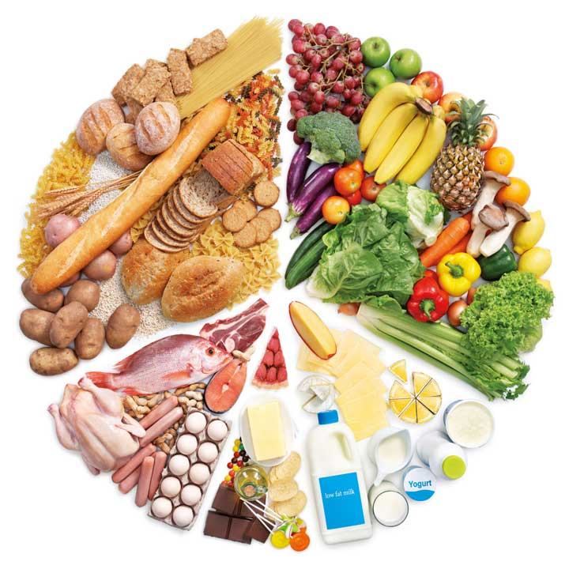

โภชนาการยุคใหม่และการเลือกบริโภคอาหาร
โภชนาการมีความสำคัญต่อการเจริญเติบโต การสร้างพลังงาน และการทำงานของระบบต่าง ๆ ภายในร่างกาย การรับประทานอาหารที่เหมาะสมจึงเป็นพื้นฐานสำคัญของการมีสุขภาพที่ดี อย่างไรก็ตาม ในปัจจุบันผู้คนมีแนวโน้มบริโภคอาหารสำเร็จรูป อาหารแปรรูป ขนมขบเคี้ยว และเครื่องดื่มที่มีน้ำตาลในปริมาณมากขึ้น จึงควรมีความรู้ในการเลือกอาหารและอ่านฉลากโภชนาการก่อนบริโภค สารอาหารที่จำเป็นต่อร่างกายประกอบด้วยคาร์โบไฮเดรต โปรตีน ไขมัน วิตามิน แร่ธาตุ ใยอาหาร และน้ำ โดยแต่ละชนิดมีหน้าที่แตกต่างกัน คาร์โบไฮเดรตเป็นแหล่งพลังงานหลักของร่างกาย โปรตีนมีส่วนช่วยในการสร้างและซ่อมแซมเนื้อเยื่อ ส่วนไขมันมีบทบาทในการให้พลังงานและช่วยในการดูดซึมวิตามินบางชนิด นอกจากนี้ วิตามินและแร่ธาตุยังมีความสำคัญต่อการทำงานของระบบต่าง ๆ ในร่างกาย การอ่านฉลากโภชนาการเป็นทักษะสำคัญที่ช่วยให้ผู้บริโภคสามารถเปรียบเทียบผลิตภัณฑ์และเลือกอาหารได้เหมาะสม โดยควรพิจารณาปริมาณพลังงาน น้ำตาล ไขมัน และโซเดียม รวมถึงตรวจสอบจำนวนหน่วยบริโภคในหนึ่งบรรจุภัณฑ์ เนื่องจากอาหารหนึ่งห่ออาจมีมากกว่าหนึ่งหน่วยบริโภค หากรับประทานทั้งห่อ ปริมาณสารอาหารที่ได้รับก็จะเพิ่มขึ้นตามจำนวนหน่วยบริโภค นอกจากนี้ ควรระมัดระวังน้ำตาลและโซเดียมแฝงในอาหารแปรรูป เช่น น้ำอัดลม เครื่องดื่มรสหวาน บะหมี่กึ่งสำเร็จรูป ไส้กรอก อาหารกระป๋อง ขนมขบเคี้ยว ซอส และน้ำจิ้ม การบริโภคน้ำตาลและโซเดียมในปริมาณมากเป็นประจำอาจเพิ่มความเสี่ยงต่อปัญหาสุขภาพหลายประการ ปัญหาที่เกี่ยวข้องกับพฤติกรรมการบริโภคอาหารยังเชื่อมโยงกับโรคไม่ติดต่อเรื้อรัง หรือ NCDs (Non-communicable Diseases) เช่น โรคเบาหวาน โรคความดันโลหิตสูง โรคหัวใจและหลอดเลือด และโรคอ้วน การป้องกันโรคเหล่านี้สามารถทำได้ด้วยการรับประทานอาหารอย่างสมดุล ออกกำลังกายอย่างสม่ำเสมอ ควบคุมน้ำหนัก และหลีกเลี่ยงพฤติกรรมที่เพิ่มความเสี่ยงต่อสุขภาพ